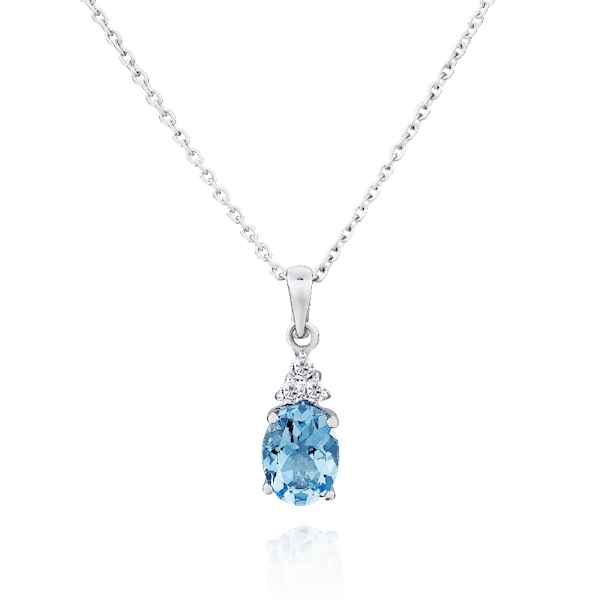

The following document is an archive discerning the contents of a vault uncovered approximately 3 leagues from the Eastern coast of Syquirn, the Sea of Trees. The vault is hypothesised to belong to revered adventurer, master of the arcane, legend of artifice, Megaleio.
Shortly following is a list of items found within the vault, descriptions of recorded or preserved magical beasts and creatures, and a summarization of various tomes and scrolls.
Wondrous Item, Rare (requires atunement)
An aquamarine crystal attatched to a chain of iridium, it seems to emit a dull glow when submerged in seawater.
Gain the following benefits when attuned to and wearing this pendant.